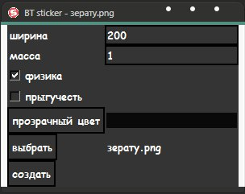
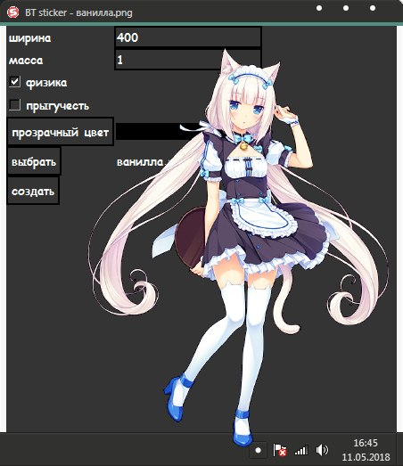

bt sticker v1.1
Описание
Это простенькая програмка для создания стикеров.
Стикеры создаются по верх всех окон и таким образом вы всегда будете их видеть.
Так же я подобрал немножко прессетов :3 которые находятся в папке "examples".
Стикеры создаются по верх всех окон и таким образом вы всегда будете их видеть.
Так же я подобрал немножко прессетов :3 которые находятся в папке "examples".
Управление
лкм: перетаскивание.
скм: стикер будет прыгать за курсором.
пкм: удалить стикер.
прозрачный цвет - это цвет который при создании стикера станет прозрачным.
Вообщем сами разберетесь...
скм: стикер будет прыгать за курсором.
пкм: удалить стикер.
прозрачный цвет - это цвет который при создании стикера станет прозрачным.
Вообщем сами разберетесь...
Скриншоты

